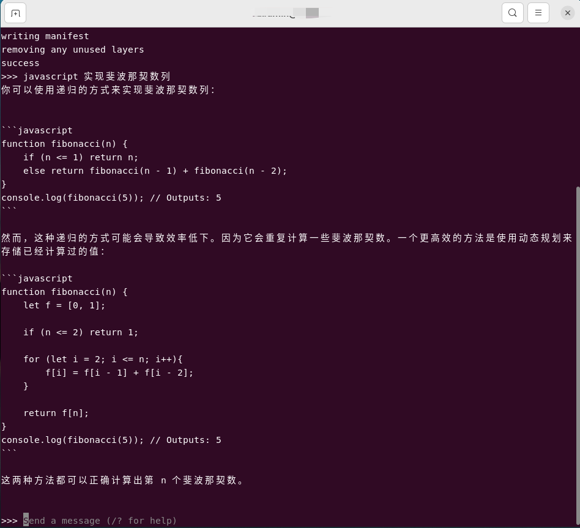

Ollama
官网：Ollama
安装
Linux
这里的测试环境是：Ubuntu 22.04 + Intel(R)Xeon(R) CPU E5-2699 v4 2.20GHZ + RAM（512GB）
官网推荐
官网给的 Linux 的安装方式很简单，只需一个命令，如下：
curl https://ollama.ai/install.sh | sh
尝试了一下，安装失败了……看了一下原因，上面的脚本会在
自己动手
这点小事儿不能阻挡咱的脚步，是不？于是就看了一下上面的脚本，发现文件下载地址是这个：Releases · ollama/ollama · GitHub。于是就下了最新版本的（2024-02-01，版本是 0.1.22）：
问了一下大模型，下载了文件之后怎么安装，下面是他的回复：
看了他的回复之后，瞬间明白了。这不就相当于 exe 嘛，不过这里是免安装的
sudo chmod +x ollama-linux-amd64
sudo mv ollama-linux-amd64 /usr/local/bin/ollama

跑起来
先看看他有哪些命令

看了这个deepseek-coder之后，选一个合适大小的大模型直接走起：
ollama run deepseek-coder:6.7b

启动服务
按照上面的指示，需要先启动服务
# 默认监听 127.0.0.1
ollama serve
# 指定监听的IP地址
OLLAMA_HOST=192.168.x.x ollama serve
注意：上面的截图并不是第一次执行

- 2024-03-21
-
再次回味时（要测试 Continue - Claude, CodeLlama, GPT-4, and more 插件），首先启动了
OLLAMA_HOST=192.168.x.x ollama serve ，之后运行一个模型ollama run deepseek-coder:6.7b ，没想到提示服务没启动……后来换成ollama serve 就好了。说明ollama run 只能在127.0.0.1 使用，这个命令做了两件事：如果模型没有拉取，则先拉取；之后进入命令行交互模式。也就是说已经拉取了某些模型之后，如果你只是想调用他的API，只需要ollama serve 即可。后面测试发现，ollama pull 也只能在127.0.0.1 使用。
# 只能本地使用
ollama serve
ollama run llava:13b
ollama pull llava:13b
# 指定监听的IP地址
OLLAMA_HOST=192.168.x.x ollama serve
OLLAMA_HOST=192.168.x.x ollama run llava:13b
OLLAMA_HOST=192.168.x.x ollama pull llava:13b
# 总之，OLLAMA_HOST 这个要使用就都使用，要不都不使用
拉取模型
# 拉取一个模型
ollama pull deepseek-coder:6.7b
# 运行一个模型。如果本地没有，会先拉取。之后进入命令行交互模式
ollama run deepseek-coder:6.7b


- 2024-04-08
- ollama 拉取的模型放到哪里了？
- ubuntu 22.04 为例，路径为：
/home/xxx/.ollama/models/blobs - 上面是默认的缓存位置，你也可以动态设置缓存位置：
OLLAMA_MODELS=/home/xxx/llm/0-model/ollama/models OLLAMA_HOST=192.168.xxx.xxx ollama serve
客户端
curl
curl http://localhost:11434/api/generate -d '{
"model": "deepseek-coder:6.7b",
"prompt":"javascript 实现斐波那契数列"
}'
curl http://localhost:11434/api/chat -d '{
"model": "deepseek-coder:6.7b",
"messages": [
{ "role": "user", "content": "javascript 实现斐波那契数列" }
]
}'
Postman

你要看着有些费劲，你可以在请求参数中添加：
Visual Studio Code
VS Code 算是客户端的一种，放在这里突出他的重要性……
Privy
市场位置：Privy - AI coding assistant like GitHub Copilot that runs locally.
这款插件支持的功能还挺多：自动补全|AI聊天|解释代码|生成测试|查找bug |诊断错误（说明：从上面的网址翻译的）。使用起来比较简单，下面看一下如何配置以及对话：
选中你要搞的代码，看一下 Privy 具体能够干啥
下面测试了一下【解释代码】功能，代码来自Javascript库
竟然是用英文回答的……他怎么知道咱的英文水平很溜，😅😅😅
Code GPT: Chat & AI Agents
官网：Code like a Pro with the CodeGPT AI Copilot | 关于CodeGPT | CodeGPT
这个插件感觉挺厉害，下载量不小，支持的 Provider 挺多的，当然这里测试的是
- 选择 Provider 时，选择 Custom
- 配置 Custom Link，这里配置的是： http://IP:11434/api/chat ; Key，随便写了一个
- 对话时，从Ollama 服务打印的日志来看，访问的地址竟然是 http://IP:11434/chat/completions 。这不是 openai api 的格式吗？后来用 LM Studio 启动服务做测试，还真的可以
- 用代理
- 提到了LiteLLM，这里没有测试
- 倒是想到了正在使用的 nginx ，后面细说
凑巧正在尝试 nginx ，下面是
worker_processes 1;
events {
worker_connections 1024;
}
http {
include mime.types;
default_type application/octet-stream;
sendfile on;
keepalive_timeout 65;
server {
listen 11434;
server_name localhost;
location / {
# 访问 localhost:11434 时，会转发到下面的地址
proxy_pass http://192.168.xxx.xxx:11434;
proxy_connect_timeout 600s;
}
}
}
配置好之后，选择 Provider 时就可以选择 Ollama 了，测试如下图：
Continue - Claude, CodeLlama, GPT-4, and more
插件地址：Continue - Claude, CodeLlama, GPT-4, and more - Visual Studio Marketplace
先占位置，知道有这么个插件，先简单的说一下该插件怎么使用
如何配置
按照下图中的步骤操作即可
对话测试